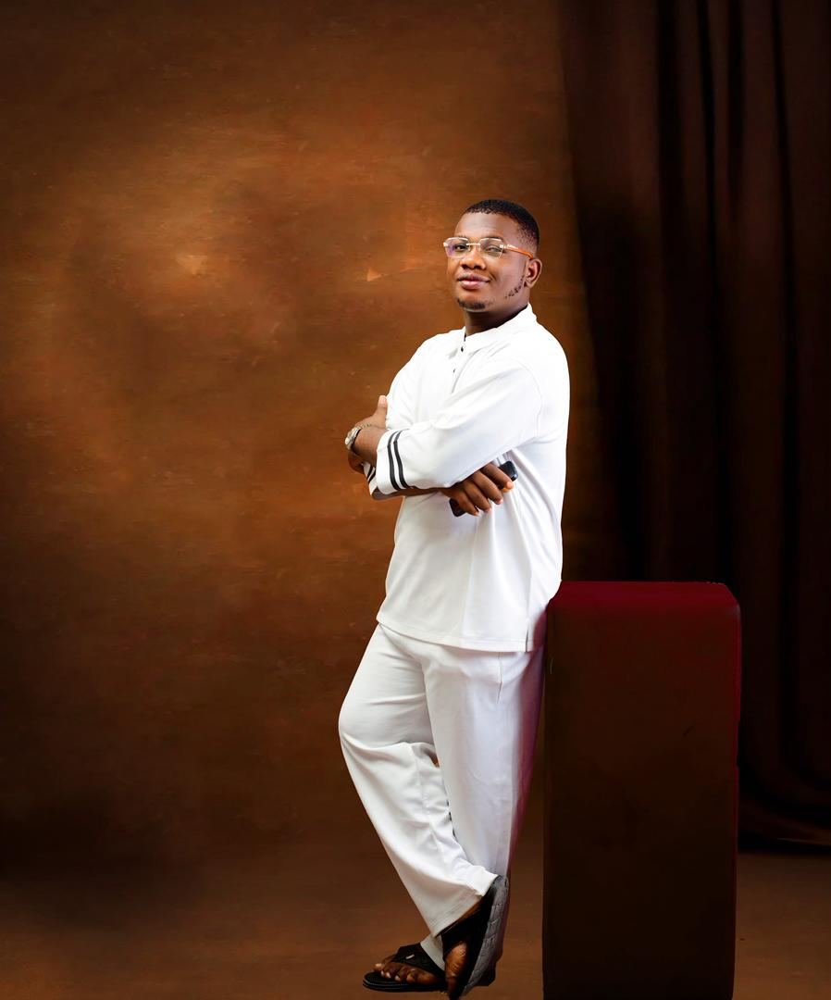

Isaac Benard is a Nigerian photographer and videographer with a strong passion for capturing life’s most meaningful moments. Versatile and detail-oriented, Isaac is well-versed in a wide range of photography, including birthdays, weddings, pre-wedding shoots, and other special celebrations.
Beyond photography, he offers professional videography services, providing full picture and video coverage for weddings, events, and social gatherings. As a freelance creative open to travel, Isaac works closely with clients to tell their stories through visually compelling and timeless imagery. His work is driven by a commitment to preserving memories, celebrating love, and delivering high-quality visuals that clients can relive for years to come.
About
